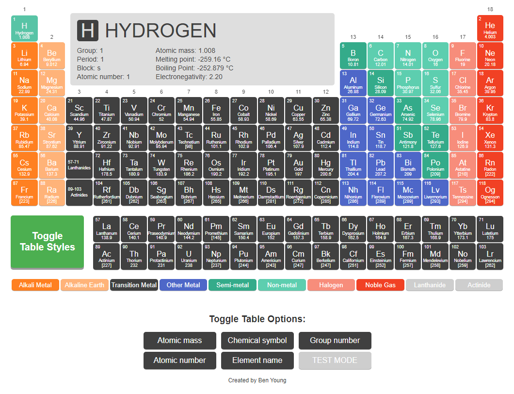
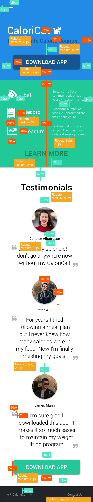
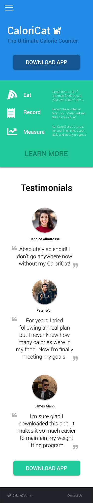

About Me
I'm learning front-end development and design.
I've taken two paid CodeCademy courses for certification:
- Build Websites from Scratch see certification
- Build Front-End Web Apps from Scratch see certification
I have created tools to use in my science classroom (interactive periodic table) and taught high school students web development.
I'm currently working an event website which I designed it in Sketch App. I'm also collaborating with the back-end developer to do the HTML/CSS inside of Ruby on Rails, using a Git client.
Languages:
- HTML
- CSS
- Sass
- jQuery
- JavaScript
- HAML
Interactive Periodic Table
View Project
Details:
- Developed for TV monitors to teach science students about chemistry.
- Showcases my ability to structure and organize complex sets of information using HTML and CSS.
- Toggle options allow users to highlight or remove styles and information on the table.
- All of the interactive elements were done with JavaScript and jQuery.
Teaching Web Development
Design Spec
Completed
Misc. Interactive Elements
See the Pen jQuery slideToggle dropdown by Ben Young (@balexyoung) on CodePen.
See the Pen pac video image overlay by Ben Young (@balexyoung) on CodePen.